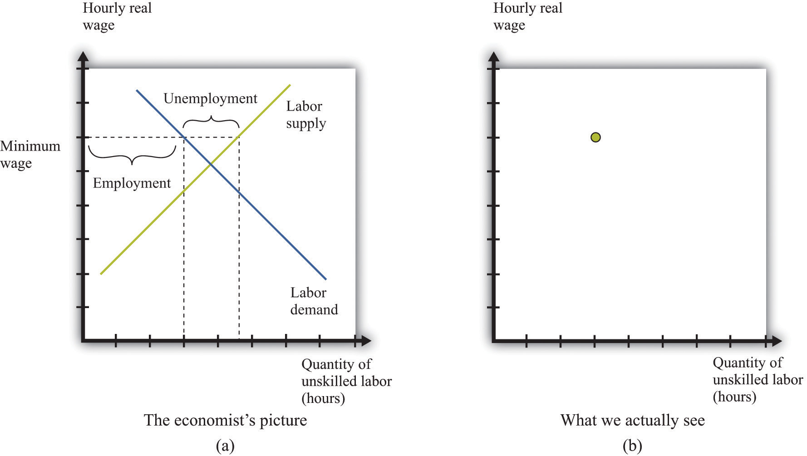
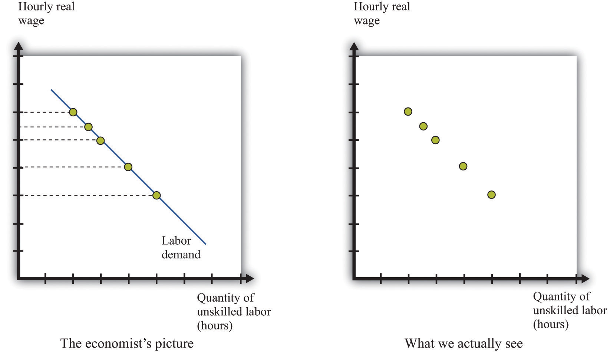
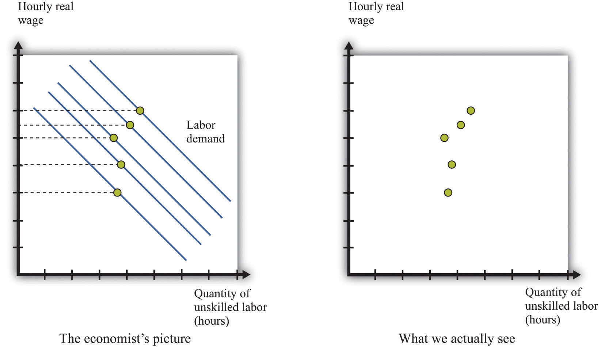
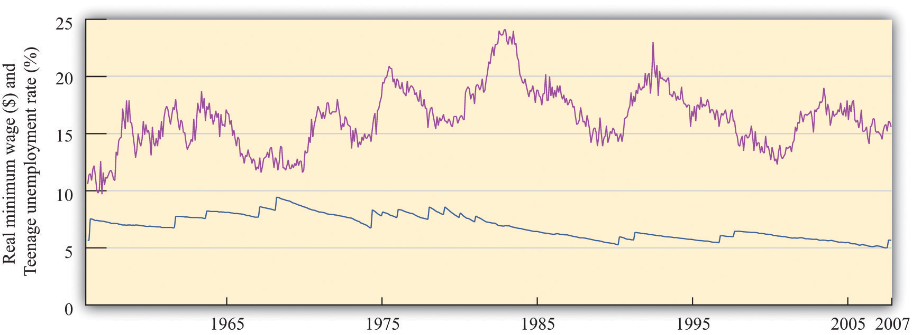

For the most part, economists cannot carry out experiments to test their theories and must use much more indirect methods. They must rely on observations that are generated by the everyday experience of individuals in an economy. In a textbook like this, we constantly draw demand and supply curves, and we get so used to seeing these diagrams that we might be fooled into thinking that we can just go out and observe them in the real world. In fact, all we observe are the market outcomes—the equilibrium price and quantity that are traded. Our conception of the labor market might look like part (a) of Figure 11.15 "Models and Data", but the data that we actually gather look like part (b) of Figure 11.15 "Models and Data".
Figure 11.15 Models and Data
We construct an entire framework based on the supply and demand curves for labor (a), but at any time we observe only a single data point: the wage and the level of employment (b).
If we want to estimate a demand curve, we need much more than part (b) of Figure 11.15 "Models and Data". We need more data points. We need different observations. In the case of the labor market, we might be able to use the fact that the minimum wage changes over time. Figure 11.16 "Inferring Labor Demand from Data" shows an example. Minimum wage changes allow us to observe different points on the labor demand curve. Given enough observations, we might be able to get a good idea of what the demand curve looks like and come up with an estimate of labor elasticity.
Figure 11.16 Inferring Labor Demand from Data
We may be able to infer a demand curve for labor by looking at what happens to the quantity of hours worked as the minimum wage changes.
Reality is messier. In actual labor markets, many things are going on at once. At the same time that the wage is changing, firms might be facing changes in the demand for their products, changes in the costs of other inputs, changes in their technology, or changes in their competitive environment. All of these changes would cause the labor demand curve to shift. As an example, look at Figure 11.17 "Difficulties Inferring Labor Demand from Data". The story here is as follows: The minimum wage is increasing over time, but—perhaps because of increased product demand—the demand for labor is also increasing over time. What we observe is shown in Figure 11.17 "Difficulties Inferring Labor Demand from Data". The unwary analyst, looking at these data, might conclude that minimum wages have little or no effect on the demand for labor.
Figure 11.17 Difficulties Inferring Labor Demand from Data
When the demand curve for labor is shifting at the same time as the minimum wage is changing, it is more difficult to see the effects of the minimum wage.
Economists who analyze data are forever trying to distinguish effects of interest (for example, minimum wage changes) from those caused by changes in other variables (for example, product demand). The key to successful empirical work is obtaining informative sources of variation and excluding irrelevant sources of variation. In the case of the minimum wage, we might look at differences in the minimum wage at different times, or we might look at differences in the minimum wage in different places (such as specific states in the United States).
Labor economist Daniel Hamermesh summarizes the findings from numerous studies in his book, Labor Demand.Daniel S. Hamermesh, Labor Demand (Princeton, NJ: Princeton University Press, 1996). Based on his review of all these studies, Hamermesh argues that a good estimate of −(elasticity of labor demand) is about 0.3. This means that if we increase the minimum wage by 10 percent, employment will decrease by about 3 percent. With these, we would conclude that labor demand is relatively inelastic, and the employment and welfare implications of the minimum wage are not that large. Labor supply also tends to be relatively inelastic, partly because the income effectsWhen a good decreases in price, the buyer can afford more of everything, including that good. and substitution effectsIf one good becomes cheaper relative to other goods, this leads the buyer to purchase less of other goods and more of that particular good. of changes in the wage tend to be offsetting. It certainly seems possible, then, that an increase in the minimum wage will raise expected wages.
We must be careful, though. Hamermesh notes that labor demand becomes more elastic as the skill level of workers decreases. It is difficult to find substitutes for workers with specialized skills. If you need an electrician, then you must hire an electrician, even if plumbers are much cheaper. If you need an airline pilot, you can’t hire a computer programmer. If you are running a store, however, and you find that labor is becoming more expensive, you might be able to upgrade your cash registers and inventory control systems and get by with fewer employees. We might expect the elasticity of demand at the minimum wage to be significantly higher.
It is therefore useful to look at studies that focus directly on minimum wage changes. One approach is to look at the relationship over time between the minimum wage and the employment experience of groups that are most directly affected by the minimum wage. Alternatively, one can look across groups that are differentially affected by the minimum wage to gauge its effect.
A reminder before we proceed. The point of going through this material is not only to help you understand the effects of a change in the minimum wage but also to provide you with a glimpse of how economic research proceeds so that you can do a better job of evaluating evidence that economists compile in all sorts of areas.
Economists have focused particular attention on teenage workers because that group is typically unskilled and is likely to be subject to the minimum wage. (This is not to say that the effects of the minimum wage are primarily on teenagers. Indeed, about two-thirds of minimum wage earners are adults.) Figure 11.18 "Teenage Unemployment in the United States" graphs the teenage unemployment rate over the period from 1956 to 2007 along with the real minimum wage for this period. We would like to know if the minimum wage has an impact on the teenage unemployment rate. This figure is suggestive of a relationship, particularly in the last couple of decades. For example, the real minimum wage fell during the 1980s, and the teenage unemployment rate also fell during that time. The teenage unemployment rate also often seems to increase around the time that the minimum wage increases. On the other hand, teenage unemployment also fell substantially during the 1960s at a time when there were several increases in the minimum wage.
Figure 11.18 Teenage Unemployment in the United States
The figure shows the federal minimum wage in the United States, adjusted for inflation, together with the teenage unemployment rate.
Source: US Department of Labor and Bureau of Labor Statistics.
If the only cause of changes in teenage employment were minimum wage changes, Figure 11.18 "Teenage Unemployment in the United States" might give us lots of answers. But this is a very big “if.” In terms of our analysis of supply and demand, it would amount to saying that the supply and demand for labor didn’t change over the entire period. In fact, you can make an enormously long list of things that might have shifted the supply curve, the demand curve, or both. Examples include whether the economy was in a boom or a recession, changes in tax rates, technological advances, and population growth. As we saw in Figure 11.17 "Difficulties Inferring Labor Demand from Data", it is difficult to disentangle the effects of a changing minimum wage from the effects of other changes. Thus we cannot isolate the effects of the minimum wage just by looking at diagrams like Figure 11.18 "Teenage Unemployment in the United States".
We need some way to take into account these other factors so that we can focus on the effects of the minimum wage. This is a complicated statistical problem that arises time and again in economics, and the ways of dealing with it go far beyond this textbook. Indeed, this problem is one of the hardest things about studying economic data. But even though the statistical details are complex, there are three simple ideas that are important to understand:
Studies from the 1970s and early 1980s found some evidence that increases in the minimum wage reduced the employment of 16- to 19-year-olds. According to economists David Card and Alan Krueger, the average estimate is that a 10 percent increase in the minimum wage would reduce employment by about 1.5 percent.David Card and Alan Krueger, Myth and Measurement: The New Economics of the Minimum Wage (Princeton, NJ: Princeton University Press, 1995). So the implied value of −(elasticity of labor demand) is about 0.15. With an average employment rate of about 50 percent, this means that a 10 percent increase in the minimum wage would reduce the rate of teenage employment by about 0.75 percentage points.
It is striking that this estimate is lower than the estimate from looking at labor demand as a whole. What is more, Card and Krueger note that more recent studies produce even smaller estimates of these effects.David Card and Alan Krueger, Myth and Measurement: The New Economics of the Minimum Wage (Princeton, NJ: Princeton University Press, 1995), Table 7.2 "Calculating Revenues". In their own work, they find that the apparent negative effects of the minimum wage on employment are statistically insignificant. This result holds not only for all 16- to 19-year-olds but also when the sample is split by race and sex.
The evidence from teenage employment studies suggests that, as an empirical matter, the effects of the minimum wage on employment may be very small. This result has surprised many economists. Although economic theory did not suggest actual magnitudes for the labor demand elasticity, the existence of substitutes for unskilled labor did suggest that labor demand would be at least somewhat elastic.
Not surprisingly, there have been many other studies of the minimum wage. Some researchers have found larger employment elasticities for teenage employment than those reported by Card and Krueger. Sometimes we are simply unable to give a definitive answer to empirical questions in economics. This can be frustrating for both students of economics and practitioners—but we are not going to pretend that the world is simpler than it actually is.
The studies we have just discussed analyzed the minimum wage by looking at minimum wage changes over time. Another approach to analyzing the effects of the minimum wage is to take advantage of differences over individuals rather than variations over time. Economists call these cross-section studies because they look at a cross section of different individuals or firms at a point in time. Many of these studies look at the effects of minimum wage changes at the level of an individual worker. Others exploit differences in minimum wage laws across states. Such differences across states give rise to a natural experimentAn exogenous change that can be associated with a shift in either the demand curve only or the supply curve only. because they can substitute, at least in part, for economists’ inability to conduct experiments in which only one thing changes at a time.
Here is an example. Recall that in 1938 a minimum wage of $0.25 per hour was put into effect under the Fair Labor Standards Act. In the United States, this minimum wage was about 40 percent of the average manufacturing wage. However, the law also applied to Puerto Rico, which was much poorer, where this minimum wage was about twice the average factory rates. In a book published more than 25 years ago, researchers John Petersen and Charles Stewart noted that the increase in the minimum wage led to numerous factory closings, and there was a dramatic decrease in output and employment.John M. Peterson, and Charles T. Stewart Jr., Employment Effects of Minimum Wage Rates (Washington: American Enterprise Institute, 1969). In the case of Puerto Rico, the introduction of the minimum wage apparently had a large adverse effect on employment.
Peterson and Stewart also provide an extensive account of early studies of minimum wages that looked at employment and wages at individual production sites. These studies compared employment before and after a change in the minimum wage in an attempt to infer the effects of the policy. A study of the seamless hosiery industry from 1938 to 1941 is of particular interest. This period saw the introduction of the $0.25 per hour minimum wage, followed by an increase to $0.325 per hour in September 1939. A researcher named A. F. Hinrichs looked at 76 different plants and divided them into two groups: those that paid high wages and those that paid low wages. We would expect the minimum wage to have a much bigger effect at the low-wage plants. Between September 1938 and September 1939, the low-wage plants had employment losses of 12 percent. Employment at high-wage plants actually expanded by 23 percent, perhaps in part because workers who lost jobs in the low-wage plants became part of the labor supply for the previously higher-wage plants. A similar pattern was noted for the period from 1938 to 1940.
A much more recent study by Card and Krueger is another example of this approach. They studied employment patterns in fast-food restaurants in New Jersey and Pennsylvania. The key to their research was that, during the period of study, the minimum wage was increased in New Jersey but not in Pennsylvania. (Remember that individual states sometimes set minimum wages above the federal minimum.) From this natural experiment, Card and Krueger found that the increased minimum wage in New Jersey actually seemed to have increased employment.
The evidence from other countries (both cross-section studies and studies over time) is likewise mixed.A recent Organisation for Economic Co-operation and Development report has a summary of minimum wage studies from different countries: “Making the Most of the Minimum: Statutory Minimum Wages, Employment and Poverty,” accessed March 14, 2011, http://www.oecd.org/dataoecd/8/57/2080222.pdf. One study of Greek labor markets, for example, found a negative effect for men but a positive effect for women. Another study found negative effects for Mexico but not for Colombia. Different researchers in France have come to different conclusions about the effects of the minimum wage there; researchers in New Zealand likewise disagree; and so on.
We started with what seemed to be some simple questions about the minimum wage. The answers turned out to be quite complex. Empirical research does not deliver a definitive answer about whether minimum wages have a big effect on employment. This leads to some disagreement among economists, particularly because the minimum wage is a politically charged issue. From the perspective of policymaking, the lack of a consensus creates difficulty in formulating good policy. On the other hand, the lack of a consensus provides a stimulus for continued work on these important issues.
Though we have emphasized the employment effects of minimum wage changes, there are other effects of minimum wages as well. First, remember that the main argument in favor of minimum wages is that they are a vehicle for redistributing income toward the working poor. Card and Krueger present a detailed analysis of the types of individuals most likely to be directly affected by minimum wage changes. Although empirical work often focuses on the employment of teenage workers, young workers are not the only group in the labor market that is paid close to the minimum wage. About 50 percent of the workers affected by the April 1990 increase in the minimum wage were older than 24 years old, for example.
How much income then flows to these workers as a consequence of an increase in the minimum wage? Card and Krueger conclude that the increase in the minimum wage during 1990 and 1991 had only a tiny effect on the distribution of income. They calculate that the minimum wage increase from $3.35 to $4.25 transferred about $5.5 billion of income to low-wage earners. This amounts to about 0.2 percent of family earnings. The host of transfer programs in place in the United States swamps the effects of the minimum wage on the redistribution of income. The evidence from other studies and countries is broadly in line with this conclusion: several studies find some effects of minimum wages on income distribution, but these effects are typically small.
Second, we can think about the effect of the minimum wage on firms. An increase in the minimum wage increases firms’ marginal costThe extra cost of producing an additional unit of output, which is equal to the change in cost divided by the change in quantity. of production. As a consequence, firms will increase their prices and sell less output. Because of this, increases in the minimum wage reduce profits, so we might expect to see this reflected in the share prices of firms that employ minimum wage workers. Relative to the large empirical literature on employment effects, the implications for employers have been largely neglected. Card and Krueger survey the evidence and find relatively small effects on the stock market value of firms.